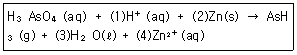
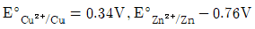
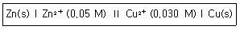
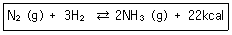
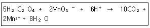
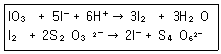
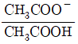
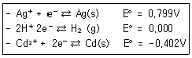
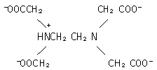

화학분석기사(구) (2018-09-15 기출문제)
1과목: 일반화학
1. 원자 내에서 전자는 불연속적인 에너지 준위에 따라 배치된다. 이러한 주에너지 준위에서 전자가 분포할 확률을 나타낸 공간을 무엇이라 하는가?
- 원자핵
- Lewis 구조
- 전위(potential)
- 궤도함수
(정답률: 92%)

2. 0.25M NaCl 용액 350mL에는 약 몇 g의 NaCl이 녹아 있는가? (단, 원자량은 Na 22.99g/mol, Cl 35.45g/mol이다.)
- 5.11g
- 14.6g
- 41.7g
- 87.5g
(정답률: 87%)
3. 다음 산화환원 반응이 산성용액에서 일어난다고 가정할 때, (1), (2), (3), (4)에 알맞은 숫자를 순서대로 나열한 것은?

- 8, 16, 4, 16
- 8, 4, 4, 3
- 6, 3, 3, 3
- 8, 4, 4, 4
(정답률: 89%)
4. 알데히드(aldehyde)와 케톤(ketone)에 관한 설명 중 옳지 않은 것은?
- 알데하이드들은 전반적으로 강한 냄새를 풍긴다.
- 포름알데하이드는 생물표본 보관에 흔히 사용되는 보존제이다.
- 카보닐 작용기는 케톤에는 있으나 알데하이드에는 없다.
- 케톤에는 카보닐 작용기에 두 개의 탄소가 결합되어 있다.
(정답률: 81%)
5. 0℃에서 액체 물의 밀도는 0.9998g/mL이고, Kw 값은 1.14×10-15이다. 액체의 0℃에서의 해리 백분율은 얼마인가?
- 3.4×10-8 %
- 3.4×10-6 %
- 6.1×10-8 %
- 7.5×10-8 %
(정답률: 37%)
6. 다음의 조건하에 있는 Zn/Cu 전지의 전위를 25℃에서 계산하면? (단,

이다.)(오류 신고가 접수된 문제입니다. 반드시 정답과 해설을 확인하시기 바랍니다.)
- 1.06V
- 1.63V
- 2.12V
- 3.18V
(정답률: 68%)
7. 땅에 매설한 연료탱크나 송수관의 강철을 녹슬지 않게 하는 데 철보다 활성이 큰 금속을 전선으로 연결한다. 이 때 사용되는 금속과 방법이 알맞게 짝지워진 것은 무엇인가?
- Al-산화막 형성
- Mg-음극보호
- Ag-도금 피막형성
- Cu-희생적 산화
(정답률: 65%)
8. 다음 중 수소의 질량 백분율(%)이 가장 큰 것은?
- HCl
- H2O
- H2SO4
- H2S
(정답률: 88%)
9. 다음 중 영구기체(상온에서 압축하여 액화할 수 없는 기체)가 아닌 것은?
- 수소
- 이산화탄소
- 질소
- 아르곤
(정답률: 66%)
10. 다음 중 시크로알칸(cycloalkane)의 화학식에 해당하는 것은?
- C2H6
- C3H8
- C4H10
- C6H12
(정답률: 88%)
11. 유기화합물의 이름이 틀린 것은?
- CH3 -(CH2)4 -CH3:헥산
- C2H5OH:에틸알코올
- C2H5OC2H5:디에틸에테르
- H-COOH:벤조산
(정답률: 84%)
12. 다음 중 화합물의 실험식량이 가장 적은 것은?
- C14H8O4
- C10H8OS3
- C15H12O3
- C12H18O4N
(정답률: 81%)
13. 유기화합물에 대한 설명으로 틀린 것은?
- 벤젠은 방향족 탄화수소이다.
- 포화 탄화수소는 다중 결합이 없는 탄화수소를 말한다.
- 알데히드는 알코올을 산화시켜 얻을 수 있다.
- 물과는 달리 알코올은 수소결합을 하지 못한다.
(정답률: 86%)
14. 다음 중 파울리 베타원리를 옳게 설명한 것은?
- 전자는 에너지를 흡수하면 들뜬상태가 된다.
- 한 원자 안에 들어있는 어느 두 전자도 동일한 네 개의 양자수를 가질 수 없다.
- 부껍질 내에서 전자의 가장 안정된 배치는 평행한 스핀의 수가 최대인 배치이다.
- 양자수는 주양자수, 각운동량 양자수, 자기양자수, 스핀양자수 4가지가 있다.
(정답률: 59%)
15. 원자 구조에 대한 설명 중 틀린 것은?
- 원자의 구조는 중심에 핵이 있고 그 주위에 전자가 둘러싸고 있는 형태이다.
- 원자핵은 양성자와 중성자로 이루어져 있다.
- 원자의 질량수는 양성자수와 전자수를 합친 것과 같다.
- 원자번호는 원자핵에 있는 양성자 수와 같다.
(정답률: 88%)
16. 나일론-6라 불리는 합성섬유는 탄소 63.68%, 질소 12.38%, 수소 9.80% 및 산소 14.14%의 원자별 질량비를 지니고 있다. 나이론-6의 실험식은?
- C5N2H10O
- C6NH10O2
- C5NH11O
- C6NH11O
(정답률: 78%)
17. 다음 중 완충용량이 가장 큰 용액은?
- 0.01M 아세트산과 0.01M 아세트산나트륨의 혼합용액
- 0.1M 아세트산과 0.004M 아세트산나트륨의 혼합용액
- 0.0⑤M 아세트산과 0.1M 아세트산나트륨의 혼합용액
- 1M 아세트산과 0.001M 아세트산나트륨의 혼합용액
(정답률: 78%)
18. C4H8의 모든 이성질체의 개수는 몇 개인가?
- 4
- 5
- 6
- 7
(정답률: 52%)
19. 어떤 반응의 평형상수를 알아도 예측할 수 없는 것은?
- 평형에 도달하는 시간
- 어떤 농도가 평형조건을 나타내는지 여부
- 주어진 초기농도로부터 도달할 수 있는 평형의 위치
- 평형조건에서 반응의 진행 정도
(정답률: 80%)
20. 산과 염기에 대한 설명 중 틀린 것은?
- 아레니우스 염기는 물에 녹으면 해리되어 수산화이온을 내놓는 물질이다.
- 아레니우스 산은 물에 녹으면 해리되어 수소이온을 내놓는 물질이다.
- 염기는 리트머스의 색깔을 파란색에서 빨간색으로 변화시킨다.
- 산은 마그네슘, 아연 등의 금속과 반응하여 수소기체를 발생시킨다.
(정답률: 93%)
2과목: 분석화학
21. 100℃에서 물의 이온곱상수(Kω) 값은 49×10-14이다. 0.15M NaOH 수용액의 온도가 100℃일 때 수산화 이온(OH-)의 농도는 얼마인가?
- 7.0×10-7M
- 0.021M
- 0.075M
- 0.15M
(정답률: 47%)
22. 질소와 수소로부터 암모니아를 만드는 반응에서 평형을 이동시켜 암모니아의 수득률을 높이는 방법이 아닌 것은?

- 압력을 높인다.
- 질소의 농도를 증가시킨다.
- 수소의 농도를 증가시킨다.
- 암모니아의 농도를 증가시킨다.
(정답률: 87%)
23. 0.⑤M 니코틴(B, pKb1=6.15, pKb2=10.85)을 0.⑤M HCl로 적정하면, 제 1당량점은 뚜렷하게 나타나지만 제 2당량점은 그렇지 않다. 다음 중 그 이유로 옳은 것은?
- BH22+가 약산이기 때문이다.
- 강산으로 적정하였기 때문이다.
- BH+가 너무 약한 염기이기 때문이다.
- BH+→BH22+ 반응이 잘 진행되기 때문이다.
(정답률: 58%)
24. 옥살산(H2C2O4)은 뜨거운 산성용액에서 과망간산 이온(MnO4-)과 다음과 같이 반응한다. 이 반응에서 지시약 역할을 하는 것은?

- H2C2O4
- MnO4
- CO2
- H2O
(정답률: 92%)
25. 1차 표준물질 KIO3 (분자량=214.0g/mol) 0.208g으로부텉 생성된 l2를 적정하기 위해서 다음과 같은 반응으로 Na2 S2 O3가 28.5mL가 소요되었다. 적정에 사용된 Na2 S2 O3의 농도는 몇 M인가?

- 0.1⑤M
- 0.2⑤M
- 0.250M
- 0.3⑤M
(정답률: 61%)
26. 40.00mL의 0.1000M l-를 0.2000M Pb2+로 적절하고자 한다. Pb2+를 10.00mL 첨가하였을 때, 이 용액 속에서 l-의 농도(M)는 약 얼마인가? (단, Pbl2(s)⇄Pb2+(aq)+2l-(aq), Ksp=7.9×10-9이다.) (문제 오류로 가답안 발표시 2번으로 발표되었지만 확정답안 발표시 모두 정답처리 되었습니다. 여기서는 가답안인 2번을 누르면 정답 처리 됩니다.)
- 0.000013M
- 0.0013M
- 0.1000M
- 0.2000M
(정답률: 76%)
27. 농도(Concentration)에 대한 설명으로 옳은 것은?
- 몰랄 농도(m)는 온도에 따라 변하지 않는다.
- 몰랄 농도는 용액 1kg 중 용질의 몰수이다.
- 몰 농도(M)는 용액 1kg 중 용질의 몰수이다.
- 몰 농도는 온도에 따라 변하지 않는다.
(정답률: 72%)
28. 산-염기 적정에 대한 설명으로 옳은 것은?
- 산-염기 적정에서 당량점의 pH는 항상 14.00이다.
- 적정 그래프에서 당량점은 기울기가 최소인 변곡점으로 나타난다.
- 다양성자 산(multiprotic acid)의 당량점은 1개이다.
- 다양성자 산의 pKa 값들이 매우 비슷하거나, 적정하는 pH가 매우 낮으면 당량점을 뚜렷하게 관찰하기 힘들다.
(정답률: 76%)
29. MnO4- 이온에서 망간(Mn)의 산화수는 얼마인가?
- -1
- +4
- +6
- +7
(정답률: 92%)
30. pKa=4.76인 아세트산 수용액의 pH가 4.76일 때

의 값은 얼마인가?- 0.18
- 0.36
- 0.50
- 1.00
(정답률: 86%)
31. 활동도는 용액 속에 존재하는 화학종의 실제 농도 또는 유효농도를 나타낸다. 다음 중 활동도 계수의 성질이 아닌 것은? (단, ai=fi[i]이고 ai는 화학종 ⅰ의 활동도, fi는 ⅰ의 활동 도계수, [i]는 ⅰ의 농도이다.)
- 동일한 수와 이온 반지름을 갖는 경우 +이온이든 -이온이든 전하수가 같으면 fi의 값은 같다.
- 수화된 이온의 반지름이 작으면 작을수록 fi의 값도 작아진다.
- 이온의 세기가 증가하면 fi의 값도 증가한다.
- 무한히 묽은 용액일 경우에는 fi=1이다.
(정답률: 60%)
32. 다음 각각의 반쪽 반응식에서 비교할 때 강한 산화제와 강한 환원제를 모두 옳게 나타낸 것은?

- 강한 산화제:Ag+, 강한 환원제:Ag(s)
- 강한 산화제:H+, 강한 환원제:H2
- 강한 산화제:Cd2+, 강한 환원제:Ag(s)
- 강한 산화제:Ag+, 강한 환원제:Cd(s)
(정답률: 79%)
33. 25°에서 2.60×10-5M HCl 수용액의 OH- 이온의 농도는?
- 3.85×10-7M
- 3.85×10-8M
- 3.85×10-9M
- 3.85×10-10M
(정답률: 75%)
34. 첨전적정에서 종말점을 검출하는 데 일반적으로 사용하는 사항으로 거리가 먼 것은?
- 전극
- 지시약
- 빛의 산란
- 리트머스 시험지
(정답률: 64%)
35. EDTA의 pK1부터 pK6까지의 값은 0.01, 1.5, 2.0, 2.66, 6.16, 10.24이다. 다음 EDTA의 구조식은 pH가 얼마일 때의 주요 성분인가?

- pH12
- pH7
- pH3
- pH1
(정답률: 70%)
36. 전기화학에 대한 설명으로 옳은 것은?
- 전자를 잃었을 때 산화되었다고 하며, 산화제는 전자를 잃고 자신이 산화된다.
- 전자를 얻게 되었을 때 산화되었다고 하며, 환원제는 전자를 얻고 자신이 산화된다.
- 볼트(V)의 크기는 쿨롱(C)당 주울(J)의 양이다.
- 갈바니 전지(galvanic cell)는 자발적인 화학반응으로부터 전기를 발생시키는 영구기관이다.
(정답률: 59%)
37. 갈바니 전지(galvanic cell)에 대한 설명으로 틀린 것은?
- 볼타 전지는 갈바니 전지의 일종이다.
- 전기에너지를 화학에너지로 바꾼다.
- 한 반응물은 산화되어야 하고, 다른 반응물은 환원되어야 한다.
- 연료 전지는 전기를 발생하기 위해 반응물을 소모하는 갈바니 전지이다.
(정답률: 79%)
38. 플루오르화칼슘(CaF2)의 용해도곱은 3.9×10-11이다. 이 염의 포화용액에서 칼슘이온의 몰농도는 몇 M인가?
- 2.1×10-4
- 3.4×10-4
- 6.2×10-6
- 3.9×10-11
(정답률: 58%)
39. 순수하지 않은 옥살산 시료 0.7500g을 0.5066N NaOH용액 21.37mL로 2번째 당량점까지 적정하였다. 시료 중에 포함된 옥살산(H2C2O4ㆍ2H2O, 분자량=126)의 wt%는 얼마인가?
- 11%
- 63%
- 84%
- 91%
(정답률: 42%)
40. 미지 시료 중의 Hg2+이온을 정량하기 위하여 과량의 Mg(EDTA)2-를 가하여 잘 섞은 다름 유리된 Mg2+를 EDTA 표준 용액으로 적정할 수 있다. 이 때 금속-EDTA 착물 형성 상수(Kf:fomation constant)의 비교와 적정법의 이름이 옳게 연결된 것은?
- Kf,Hg＞Kf,Mg:간접 적정
- Kf,Hg＞Kf,Mg:치환 적정
- Kf,Mg＞Kf,Hg:간접 적정
- Kf,Mg＞Kf,Hg:치환 적정
(정답률: 61%)
3과목: 기기분석I
41. 양성장 NMR 기기는 4.69T의 자기장 세기를 갖는 자석을 사용한다. 이 자기장에서 수소 핵이 흡수하는 주파수는 몇 MHz인가? (단, 양성자의 자기회전비는 2.68×108 radian T-1s-1이다.)
- 60
- 100
- 120
- 200
(정답률: 55%)
42. 자외선-가시선 흡수 분광계에서 자외선 영역의 연속적인 파장의 빛을 발생시키기 위해서 널리 쓰이는 광원은?
- 중수소 등
- 텅스텐 필라멘트 등
- 아르곤 레이저
- 크세논 아크 등
(정답률: 60%)
43. 불꽃원자흡수분광법(Flame atomic absorption spectroscopy)에 비해 유도결합플라즈마(ICP) 원자방출분광법의 장점이 아닌 것은?
- 불꽃보다 ICP의 온도가 높아져 시료가 완전하게 원자화된다.
- 불꽃보다 ICP의 온도가 높아져 이온화가 많이 일어난다.
- 광원이 필요없고 다원소(multielement) 분석이 가능하다.
- 불꽃보다 ICP의 온도가 균일하므로 자체흡수(self-absoption)가 적다.
(정답률: 63%)
44. 형광에 대한 설명으로 틀린 것은?
- 복잡하거나 단순한 기체, 액체 및 고체 화학계에서 나타난다.
- 전자가 복사선을 흡수하여 들뜬 상태가 되었다가 바닥상태로 되돌아가며 흡수파장과 같은 두 개의 복사선을 모든 방향으로 방출한다.
- 흡수한 파장을 변화시키지 않고 그대로 재방출하는 형광을 공명복사선 또는 공명형광이라고 한다.
- 분자형광은 공명선보다 짧은 파장이 중심인 복사선 띠로 나타나는 경우가 훨씬 더 많다.
(정답률: 45%)
45. 분광광도법으로 단백질을 분석하는 과정에 대한 설명으로 옳지 않은 것은?
- 분석파장에서는 단백질에 존재하는 방향족 고리의 평균흡광도가 나타난다.
- 단백질이 일정한 파장의 전자기 복사선을 흡수하는 성질을 이용한 방법이다.
- 주로 280nm의 자외선 영역에서 분석한다.
- 분석 과정에서 염이나 완충용액 등 일반 용질들은 흡광도를 거의 나타내지 않는다.
(정답률: 40%)
46. 일반적으로 사용되는 원자화방법(Atomization)이 아닌 것은?
- 불꽃원자화(Flame Atomization)
- 초음파 원자화(Ultrasonic Atomization)
- 유도쌍 프라스마(ICP, Inductively Coupled Plasma
- 전열증발화(Electrothermal Vaporization)
(정답률: 46%)
47. 적외선 분광법으로 검출되지 않는 비활성 진동 모드는?
- CO2의 대칭 신축 진동
- CO2의 비대칭 신축 진동
- H2O의 대칭 신축 진동
- H2O의 비대칭 신축 진동
(정답률: 60%)
48. 2×10-5M KMnO4 용액을 1.5cm의 셀에 넣고 520nm에서 투광도를 측정하였더니 0.60을 보였다. 이 때 KMnO4의 몰 흡광계수는 약 몇 L/cmㆍmol인가?
- 1.35×10-4
- 5.0×10-4
- 7395
- 20000
(정답률: 67%)
49. 다음 중 측정된 분석신호화 분석농도를 연관짓기 위한 검정법이 아닌 것은?
- 검정곡선법
- 표준물첨가법
- 내부표준물법
- 연속광원보정법
(정답률: 76%)
50. X선 형광법의 장점에 해당하지 않는 것은?
- 감도가 우수하다.
- 스펙트럼이 비교적 단순하다.
- 시료를 파괴하지 않고 분석이 가능하다.
- 단시간 내에 여러 원소들을 분석할 수 있다.
(정답률: 67%)
51. 장치가 고가임에도 불구하고 램프가 필요 없고 대부분의 원소에 대해 검출한계는 낮고 선택성이 높으며 정밀도와 정확도가 매우 우수한 특성을 고루 지닌 측정법은?
- 불꽃 원자 흡수법
- 전열 원자 흡수법
- 플라즈마 방출법
- 유도쌍 플라스마-질량분석법
(정답률: 80%)
52. 순차측정기기 중 변속-주사(slow-scan)분광계에 대한 설명으로 틀린 것은?
- 분석선 근처 파장까지는 바르게 주사하다가 그 다음 분석선에서는 주사속도가 급격히 감소되어 일련의 작은 단계로 변화되면서 주사한다.
- 동시 다중채널 기기(simultaneous multichannel instrument)보다 더 빠르고 더 적은 시료를 소모하는 장점이 있다.
- 변속주사는 유용한 데이터가 없는 파장 영역에서 소비되는 시간을 최소화할 수 있다.
- 회절발 작동이 컴퓨터 통제하에 이루어지며 변속을 아주 효과적으로 수행할 수 있다.
(정답률: 66%)
53. 원자흡수분광법에서 전열원자화 장치가 불꽃원자화 장치보다 원소 검출 능력이 우수한 주된 이유는?
- 시료를 분해하는 능력이 우수하다.
- 원자화 장치 자체가 매우 정밀하다.
- 전체 시료가 원자화 장치에 도입된다.
- 시료를 탈용매화시키는 능력이 우수하다.
(정답률: 52%)
54. NMR에서 흡수봉우리를 관찰해보면 벤젠이나 에틸렌은 δ값이 상당히 큰 값이고 아세틸렌은 작은 쪽에서 나타남을 알 수 있다. 이러한 현상을 설명해주는 인자는?
- 용매효과
- 입체효과
- 자기 이방성 효과
- McLafferty 이전반응 효과
(정답률: 63%)
55. 전형적인 분광기기는 일반적으로 5개의 부분장치로 이루어져 있다. 이에 해당하지 않는 것은?
- 광원
- 파장 선택지
- 기체 도입기
- 검출기
(정답률: 72%)
56. 방출분광계의 바람직한 특성이 아닌 것은?
- 고분해능
- 빠른 신호 획득과 회복
- 높은 세기의 미광 복사선
- 정확하고 정밀한 파장 확인 및 선택
(정답률: 71%)
57. 원자분광법에서 주로 고체 시료 도입에 이용할 수 있는 장치는?
- 기체분무기(Pneumatic nebulizer)
- 초음파 분무기(Ultrasonic nebulizer)
- 전열증발기(Electrothermal nebulizer)
- 수소화물발생기(Hydride generation device)
(정답률: 68%)
58. 분광분석법은 다음 중 어떤 현상을 바탕으로 측정이 이루어지는가?
- 분석용액의 전기적인 성질
- 각종 복사선과 물질과의 상호작용
- 복잡한 혼합물을 구성하는 유사한 성분으로 분리
- 물질을 가열할 때 나타나는 물리적인 성질
(정답률: 86%)
59. 다음 중 분자분광기기가 아닌 것은?
- 적외선 분광기
- X선 형광 분광기
- 핵자기공명 분광기
- 자외선/가시건 분광기
(정답률: 56%)
60. 10Å의 파장을 갖는 X-선 광자 에너지 값은 약 몇 eV인가? (단, Plank 상수는 6.63×10-34 Jㆍs, 1J=6.24×1018eV이다.)
- 12.50
- 125
- 1250
- 12500
(정답률: 51%)
4과목: 기기분석II
61. 질량분석계의 시료 도입장치가 아닌 것은?
- 배치식
- 연속식
- 직접식
- 모세관 전기이동
(정답률: 43%)
62. 포화칼로멜전극의 구성이 아닌 것은?
- 다공성마개(염다리)
- 포화(KCI) 용액
- 수은
- Ag 선
(정답률: 53%)
63. 질량분석기기의 이온화 방법에 대한 설명 중 틀린 것은?
- 전자충격이온화 방법은 토막 내기가 잘 일어나므로 분자량의 결정이 어렵다.
- 전자충격이온화 방법에서 분자 양이온의 생성 반응이 매우 효율적이다.
- 화학이온화 방법에 의해 얻어진 스펙트럼은 전자충격 이온화 방법에 비해 매우 단순한 편이다.
- 전자충격이온화 방법의 단점은 반드시 시료를 기화시켜야 하므로 분자량이 1000보다 큰 물질의 분석에는 불리하다.
(정답률: 42%)
64. 시차주사 열량법(DSC)이 갖는 시차열법분석법(DTA)과의 근본적인 차이는 무엇인가?
- 온도 차이를 기록
- 에너지 차이를 기록
- 밀도 차이를 기록
- 시간차이를 기록
(정답률: 84%)
65. 화학전지에 대한 설명으로 틀린 것은?
- 염다리 양쪽 끝은 다공성 마개로 막혀 있다.
- 염다리는 포화 KCI 용액과 젤라틴 등으로 되어 있다.
- 전자이동은 두 전극에서 각각 일어날 수 있어야 한다.
- 두 전지의 양쪽 용액이 잘 섞어야 한다.
(정답률: 69%)
66. 전기분해할 때 석출되는 물질의 양에 비례하지 않은 것은?
- 전기화학당량
- Faraday 상수
- 전기량
- 일정한 전류를 흘려줄 때의 시간
(정답률: 65%)
67. 이온교환 크로마토그래피에서 용리액 억제컬럼을 이용하여 방해물질을 제거하는 검출기는 무엇인가?
- 굴절률 검출기
- 전도도 검출기
- 형광 검출기
- 자외선 검출기
(정답률: 52%)
68. 시차주사열량법(DSC)에 대한 설명 중 틀린 것은?
- 측정속도가 빠르고 쉽게 사용할 수 있다.
- DSC는 정량분석을 하는 데 이용된다.
- 전력보상 DSC에서는 시료의 온도를 일정한 속도로 변화시키면서 시료와 기준으로 흘러 들어오는 열흐름의 차이를 측정한다.
- 결정성물질의 용융열과 결정화 정도를 결정하는 데 응용된다.
(정답률: 44%)
69. 25℃에서 요오드화납으로 포과되어 있고 요오드와이온의 활동도가 정확이 1.00인 용액중의 납전극의 전위는 얼마인가? (단, Pbl2의 Ksp=7.1×10-9, Pb2++2e-⇄Pb(s) E°=-0.350V)
- -0.0143V
- 0.0143V
- 0.0151V
- -0.591V
(정답률: 39%)
70. 이온선택성 막전극의 종류 중 비결정질막전극이 아닌 것은?
- 단일결정
- 유리
- 액체
- 강전해질 고분자에 고정된 측정용 액체
(정답률: 59%)
71. 기체 크로마토그래피에서 사용되는 검출기 중 할로겐 물질에 대해 검출한계가 가장 좋은 검출기는?
- 불꽃이온화 검출기(FID)
- 열전도도 검출기(TCD)
- 전자포획 검출기(ECD)
- 불꽃 광도법 검출기(FPD)
(정답률: 80%)
72. 질량분석법에 대한 설명으로 틀린 것은?
- 분자이온봉우리가 미지시료의 분자량을 알려주기 때문에 구조결정에 중요하다.
- 가상의 분자 ABCD에서 BCD*sms 딸-이온(daughter-ion)이다.
- 질량 스펙트럼에서 가장 큰 봉우리의 크기를 임의로 100으로 정한 것이 기준봉우리이다.
- 질량 스펙트럼에서 분자이온보다 질량수가 큰 봉우리는 생기지 않는다.
(정답률: 74%)
73. 20.0cm 관으로 물질 A와 B를 분리한 결과 A의 머무름 시간은 15.0분, B이 머무름 시간은 17.0분이었고, A와 B의 봉우리 밑 너비는 각각 0.75분, 1.25분이었다면 이 관의 분리능은 얼마인가?
- 1.0
- 2.0
- 3.5
- 4.5
(정답률: 68%)
74. 유리전극으로 pH를 측정할 때 영향을 주는 오차 요인으로 가장 거리가 먼 것은?
- 산 오차
- 알칼리 오차
- 탈수
- 높은 이온세기
(정답률: 56%)
75. HPLC 펌프장치의 필요요건이 아닌 것은?
- 펄스 충격 없는 출력
- 3000psi 까지의 압력 발생
- 0.1~10mL/min 범위의 흐름 속도
- 흐름속도 재현성의 상대오차를 0.5% 이하로 유지
(정답률: 58%)
76. 분리분석법에 속하지 않는 분석법은?
- 흐름주입 분석법
- 모세관 전기이동법
- 초임계 유체 크로마토그래피
- 고성능 액체 크로마토그래피
(정답률: 50%)
77. 기체크로마토그래피(GC)에서 온도 프로그래밍(Temperature Programming)의 효과로서 가장 거리가 먼 것은?
- 감도를 좋게 한다.
- 분해능을 좋게 한다.
- 분석 시간을 단축시킨다.
- 장비 구입 비용을 절약할 수 있다.
(정답률: 79%)
78. 액체 크로마토그래피 컬럼의 단수(number of plates) N만을 변화시켜 분리능(Rs)을 2배로 증가시키기 위해서는 어떻게 하여야 하는가?
- 단수 N이 2배로 증가해야 한다.
- 단수 N이 3배로 증가해야 한다.
- 단수 N이 4배로 증가해야 한다.
- 단수 N이 √n배로 증가해야 한다.
(정답률: 78%)
79. 사중극자 질량분석관에서 좁은 띠 필터로 되는 경우는?
- 고질량 필터로 작용하는 경우
- 저질량 필터로 작용하는 경우
- 고질량과 저질량 필터가 동시에 작용하는 경우
- 고질량 필터를 먼저 작용시키고, 그 다음 저질량 필터를 작용하는 경우
(정답률: 59%)
80. 액체크로마토그래피에서 보호(guard) 컬럼에 대한 설명으로 틀린 것은?
- 분석하는 주 컬럼을 오래 사용할 수 있게 해준다.
- 시료 중에 존재하는 입자나 용매에 들어있는 오염물질을 제거해준다.
- 정지상에 비가역적으로 붙은 물질들을 제거해준다.
- 잘 걸러주기 위하여 입자의 크기는 되도록 분석컬럼 보다 작은 것을 사용한다.
(정답률: 78%)